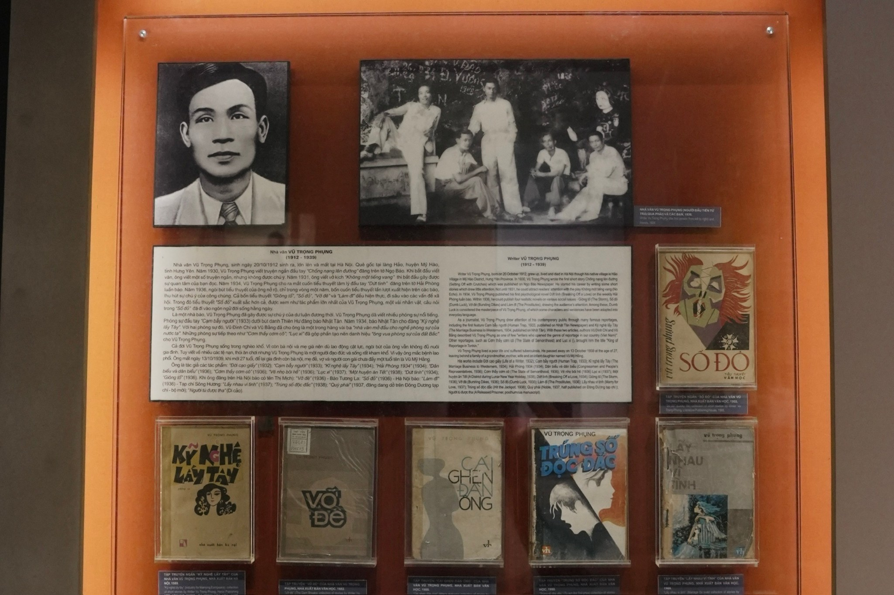
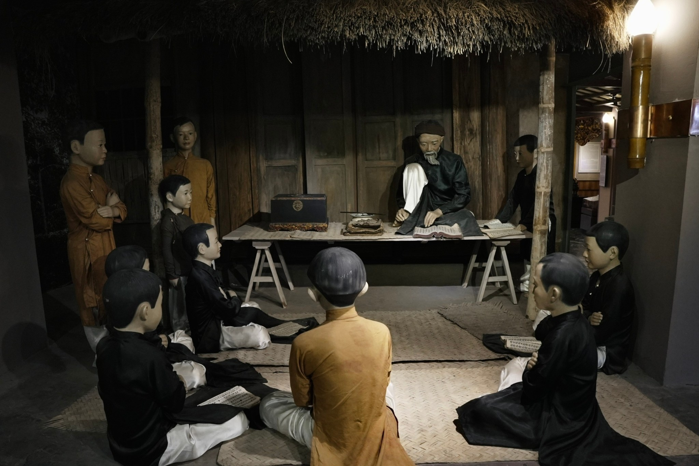
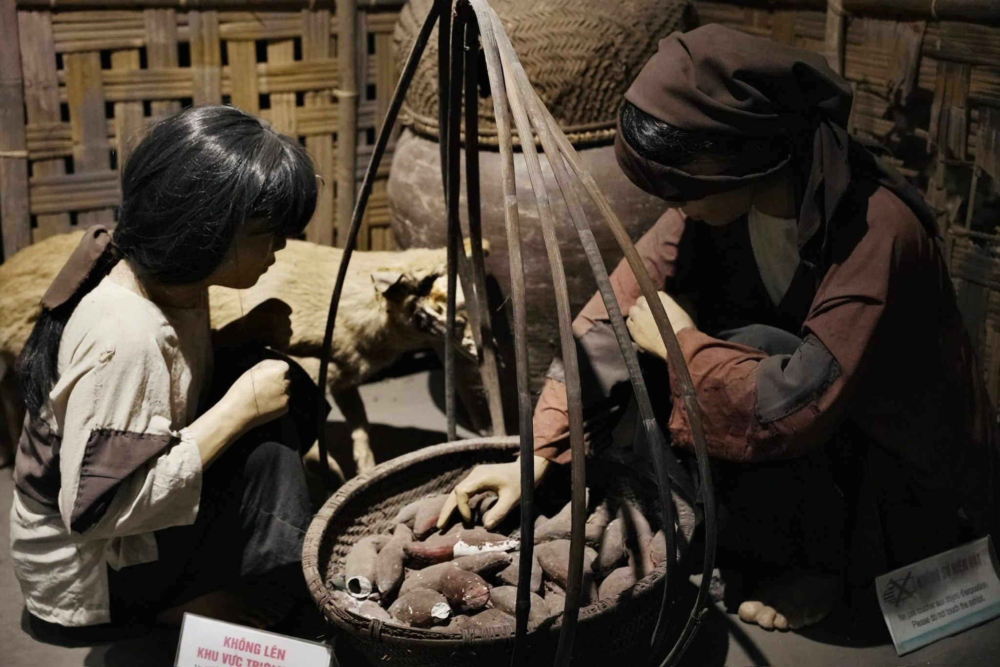
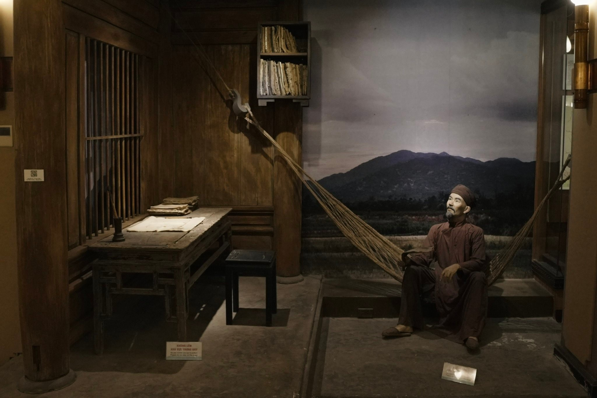
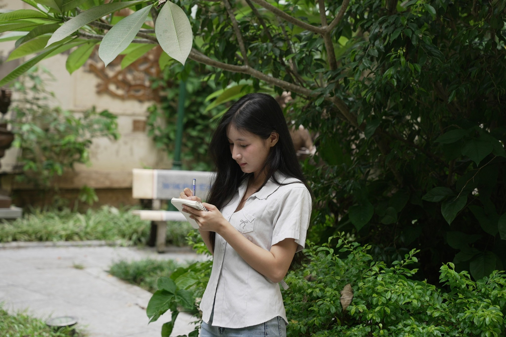

Trong bài
Không cần đi xa hay lên lịch trình phức tạp, một chuyến tham quan Bảo tàng Văn học Việt Nam là gợi ý để sống chậm giữa Hà Nội và dành thời gian khám phá những câu chuyện văn chương.
Giữa nhiều lựa chọn vui chơi tại Thủ đô, các hoạt động như đọc sách, tham quan triển lãm hay tìm hiểu văn hóa mang đến cách tận hưởng thời gian rảnh nhẹ nhàng hơn.
Thay vì khởi đầu ngày mới tại những địa điểm đông đúc, bạn có thể dành một buổi để tham quan bảo tàng Văn học Việt Nam, tìm hiểu về cuộc đời và sự nghiệp của những tác giả trong nền văn học Việt. Các khu trưng bày giới thiệu văn học Việt Nam qua nhiều giai đoạn, được trưng bày từ văn học dân gian đến những tác phẩm hiện đại.



Sống chậm giữa những câu chuyện văn chương
Khác với việc đọc thông tin trong sách báo, trải nghiệm văn học tại bảo tàng lại mở ra cách tiếp cận khác. Những bức ảnh tư liệu, vật dụng và không gian tái hiện giúp khách tham quan hình dung rõ hơn về hoàn cảnh sống, quá trình sáng tác cũng như dấu ấn của các nhà văn, nhà thơ.

Dành một khoảng nghỉ trong không gian văn hóa
Khác với những điểm vui chơi náo nhiệt, không gian văn hóa tại bảo tàng khuyến khích khách tham quan tập trung vào việc quan sát, đọc và cảm nhận. Nếu mang theo một cuốn sổ nhỏ, bạn có thể ghi lại tên tác phẩm muốn tìm đọc hoặc những câu chuyện khiến mình ấn tượng.
Sống chậm giữa khoảng xanh của vườn tượng
Không chỉ có các khu vực trưng bày trong nhà, bảo tàng còn sở hữu khuôn viên cây xanh cùng hệ thống tượng danh nhân văn học. Sau khi tham quan, bạn có thể dạo quanh khu vườn, quan sát các tác phẩm điêu khắc hoặc ghi lại vài bức ảnh lưu niệm.

Với những ai đang tìm kiếm địa điểm thư giãn tại Hà Nội, khoảng sân xanh này mang đến lựa chọn kết hợp hoạt động ngoài trời với hành trình tìm hiểu văn chương. Ánh sáng tự nhiên và cây cối cũng tạo nên bối cảnh phù hợp cho những khung hình nhẹ nhàng, không cần tạo dáng cầu kỳ.
Kết thúc ngày bằng những điều mới khám phá
Một ngày sống chậm không nhất thiết phải mang lại trải nghiệm đặc biệt hay những bức ảnh thật nổi bật. Đôi khi, điều đáng nhớ nhất lại là biết thêm câu chuyện về một nhà văn, tìm thấy một tác phẩm muốn đọc hoặc có vài giờ dành riêng cho bản thân.
Với những ai yêu thích trải nghiệm văn học, Bảo tàng Văn học Việt Nam là điểm đến đáng cân nhắc khi muốn thay đổi nhịp sinh hoạt cuối tuần. Giữa Hà Nội luôn chuyển động, đôi khi sống chậm chỉ đơn giản là chọn một điểm đến phù hợp, dành đủ thời gian để quan sát và tận hưởng những điều bình dị xung quanh.
Bảo tàng Văn học Việt Nam